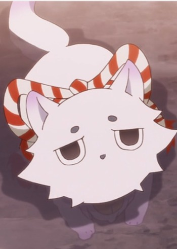

Minami Tsuda is a Japanese voice actress. She is affiliated with Aoni Production.
- Gender: Female
- Birthday: June 8, 1989
- Birthplace: Kanagawa Prefecture, Japan
- Hobbies: Theater and Watching Food Programs
- Skills: Singing

|

|
|---|
| |
Minami Tsuda is a Japanese voice actress. She is affiliated with Aoni Production.
|
|---|
| Erina |
|
Erina is a Pokemo Trainer with an Axew. She met Ash and his gang in Nimbasa City in the Unova region. | |
 |
Marigold |
|
Marigold is a little girl that Ash and Co. meet on their journey in Unova. She is rather but playful with her partner Foongus. |
 |
Sora Kashiwagi |
|
Sora Kashiwagi is the best friend of Mii-kun. Sora is very caring and put himself in front of danger to spare others. Despite his cheery personality, he holds his thoughts to himself and does not push others to explain. He has knowledge of supernatural things around his place. She is good at cooking and sewing. He put all his love to take care of Mii-kun. Minami Tsuda voiced younger Sora Kashiwagi. |
|  | Uu |
|
Uu is an inugami. It is good friends with Aa. |
 |
Axew |
|
Axew is a Pokemon from the Unova region. Axews are skilled at climbing walls. They have short limbs anf tail to climb with. Minami Tsuda voiced Iris' Axew. |
 |
Leafeon |
|
Leafeon is a Pokemon from Sinnoh region. Leafeon is an evolved of Eevee. This pokemon can perform photosynthesis while it's sleeping under sunshine. Minami Tsuda voiced Vigil's Leafeon. |
Go Back to Main Page |
Go Back to Homepage |
|
|
|
OR |
|